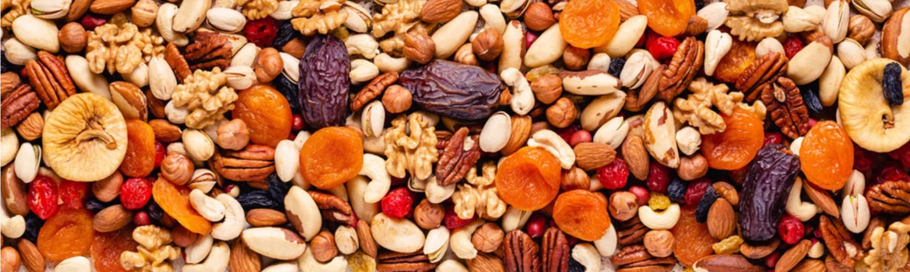
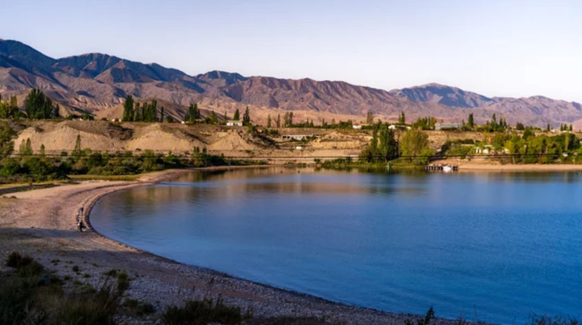
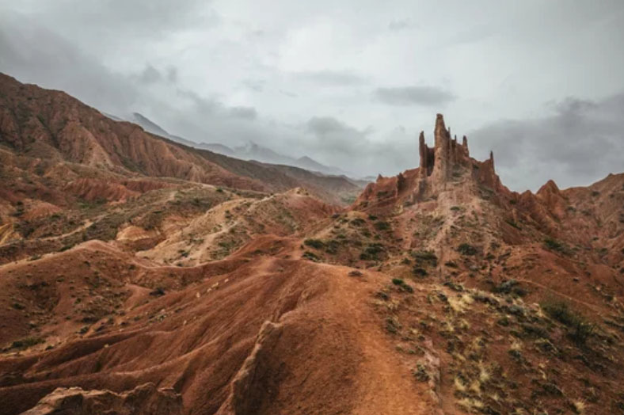
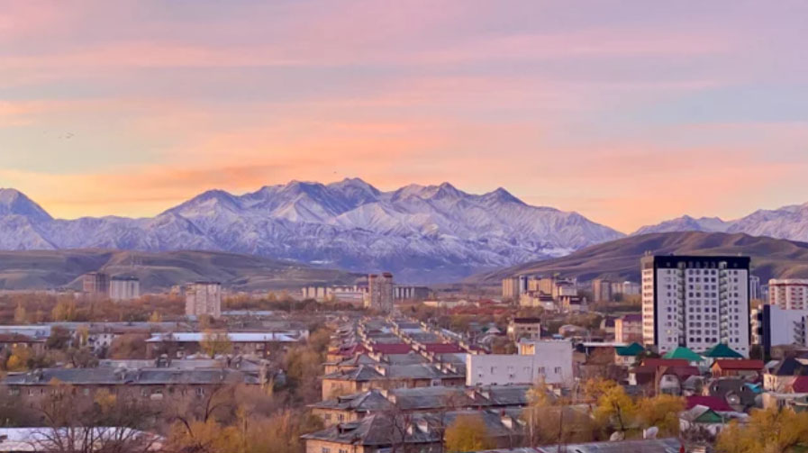
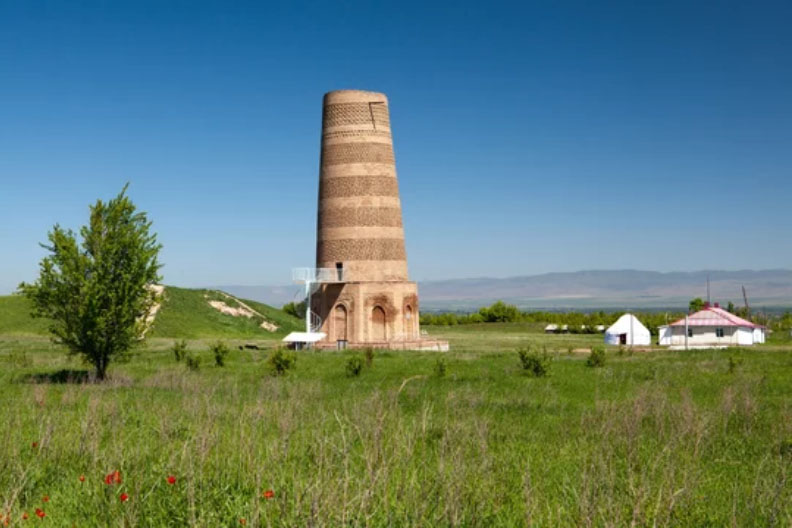
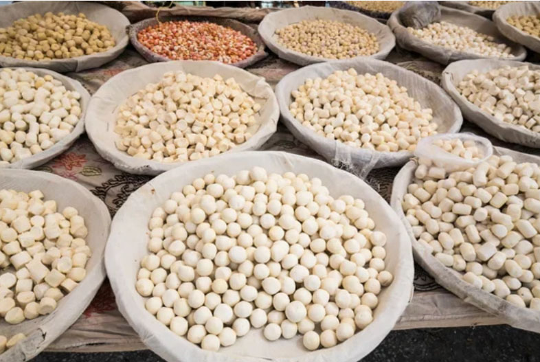
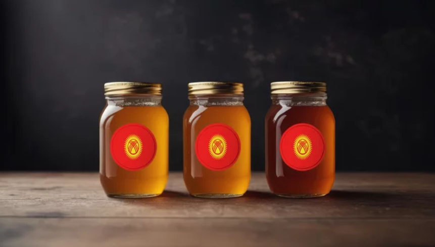
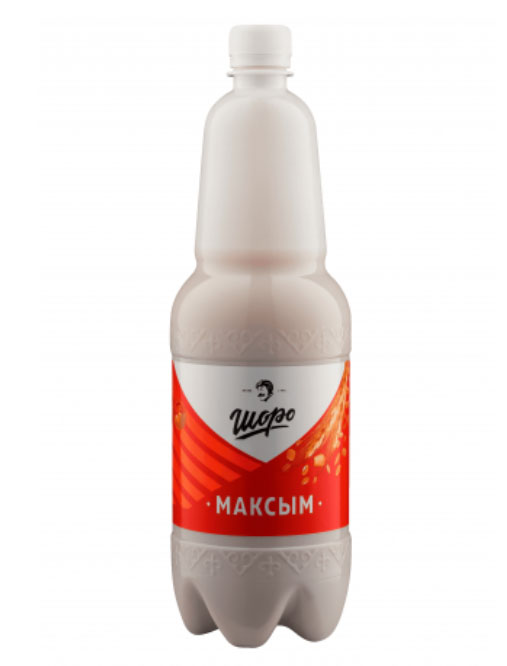

Under the Eternal Sky of the Tien Shan
Kyrgyzstan: Where the Sun Meets the Red Horizon
Step into a land where the red flag flies over snow-capped peaks, and the circular "Tunduk" opens a window to the heavens. Here, the nomadic heritage isn't just a memory; it’s a living breath felt in every yurt and every gallop across the high-altitude pastures.
Timeless Monuments & Silk Road Legacy
Iconic Landmarks
From ancient towers and sacred sites to breathtaking natural wonders, discover landmarks that reflect centuries of history, cultural exchange, and the enduring spirit of Central Asia

Issyk-Kul
A Vast Alpine Lake of Endless Horizons, where crystal-clear waters meet snow-capped mountains under an ever-changing sky

Skazka Canyon
A historic ensemble in Bukhara featuring the towering Kalyan Minaret and elegant mosques, once a spiritual and cultural center of the Silk Road.

Bishkek
The capital, Bishkek, is dotted with archaeological sites that were once capitals or seasonal centers of powers such as the Wusun, the Western Turkic Khaganate, the Kara-Khanid Khanate, and the Western Liao (Kara-Khitan).

Tokmok
A Gateway to Ancient Silk Road Echoes, home to the Burana Tower—once a 45-meter minaret, now standing at around 25 meters after centuries of earthquakes, quietly watching over the steppe
Flavors of Nomadic Heritage
Simple, hearty dishes shaped by the rhythms of the степpe, where dairy, grains, and tradition come together in every bite

Kurut
A Traditional Nomadic Snack, these dried balls of salted yogurt offer a tangy flavor and long-lasting nourishment, once carried by herders across the vast степpe

Kyrgyz Honey (Jam)
A Taste of Mountain Purity, this rich golden honey—often enjoyed like jam—captures the essence of wild alpine flowers and the untouched nature of Kyrgyzstan

Maksym
A Refreshing Grain Drink of the Steppes, made from fermented cereals, this slightly sour and hearty beverage has long been a staple of everyday life and summer refreshment
キルギス共和国の歴史
Echoes of Empires Beneath Azure Domes
From the rise of Timurid splendor to the bustling caravan routes of the Silk Road, discover a history shaped by conquest, knowledge, and timeless artistry.
古代
突厥帝国（6世紀 - 8世紀）
突厥帝国はテュルク系遊牧民による広大な帝国で、キルギス地域もその支配下に入りました。この時期、キルギス人の祖先は遊牧生活を送りながら、突厥文化や言語の影響を受けました。
中世
ウイグル可汗国 （8～9世紀）
テュルク系文化の継承 遊牧国家の流れ ウイグル可汗国はモンゴル高原が中心で、現在のキルギス全域を直接支配していたわけではありません。
エニセイ・キルギス（9世紀）
特徴：現在のキルギス人の祖先とされる存在です。
拠点：エニセイ川流域（今のロシア南部）
9世紀にウイグルを倒して勢力拡大 。その後、南下して現在のキルギス方面へ
モンゴル帝国（13世紀）
チンギス・ハーンの遠征により、キルギス地域はモンゴル帝国の支配下に入りました。モンゴル帝国の広大な交易ネットワークにより、キルギス地域もシルクロードの一部として重要な役割を果たしました。遊牧民文化は維持されつつも、モンゴルの政治体制や文化の影響を受けました。
近世
コーカンド・ハン国（18世紀後半 - 19世紀）
フェルガナ盆地を拠点とするコーカンド・ハン国がキルギス地域を支配しました。この時期、キルギスの部族はコーカンド・ハン国に貢納を課され、軍事動員にも参加しましたが、高地の部族社会は比較的独立性を保っていました。
近現代・現代
ロシア帝国 （19世紀後半 - 1917年）
ロシア帝国は中央アジアへの進出を進め、キルギス地域を併合しました。ロシアの支配下で、遊牧民の定住化が進められ、伝統的な生活様式が大きく変化しました。また、ロシア移民の増加により、キルギスの社会構造にも影響が及びました。
ソビエト連邦（1924年 - 1991年）
1924年10月: ロシア社会主義連邦ソビエト共和国の一部として、「カラ・キルギス自治州」が設立されました。
1925年5月: 名称から「カラ（黒い）」が取られ、「キルギス自治州」に改称されました。
1926年: 自治州からキルギス自治ソビエト社会主義共和国（キルギスASSR）へ昇格。
1936年: ソ連の構成共和国である「キルギス・ソビエト社会主義共和国（キルギスSSR）」に昇格し、ロシア（RSFSR）から独立した単位となる。
政策: 農業の集団化（コルホーズ）や工業化政策が進められ、多くのキルギス人が新しい生活様式を強いられました。
影響: 教育や医療の整備が進む一方で、伝統的な遊牧文化の衰退や強制的な政策による犠牲も大きかったです。
「近代化」と「伝統の抑制」が同時に進む
1990年: オシュ事件（キルギス系住民とウズベク系住民の衝突）
キルギス共和国（1991年 - 現在）
独立: ソビエト連邦の崩壊に伴い、1991年に独立を達成しました。
政治的変動: 2005年の「チューリップ革命」や2010年の第二の革命（2010年キルギス騒乱）を経て、議会制を重視する憲法が採択されました。
2010年6月南部にてキルギス系とウズベク系住民の大規模衝突(オシュ事件（第二次オシュ紛争）)
文化と多様性: 現在も遊牧民文化の名残が色濃く残り、伝統的な馬上競技やゲル（ボズウイ）などが人々のアイデンティティを支えています。
カザフスタンとの区別がまぎらわしい
1924年：カラ・キルギス自治州として誕生 ロシアの「キルギス（＝カザフ）」と区別するため、あえて「カラ（黒）」を付けて呼ばれていました。
1926年：キルギス自治ソビエト社会主義共和国（キルギスASSR）へ昇格 カザフ側が「カザフ」と名乗りを変えたため、ようやく「キルギス」の名称がこちらに回ってきました。
ウズベキスタンとキルギスタン
2010年のオシュ事件（民族衝突）直後は、本当にお互い嫌い合っているような状態でした。 転機：2016年のウズベキスタン大統領交代 ウズベキスタンの独裁的だったカリモフ大統領が亡くなり、ミルジヨエフ大統領に代わったことで空気が一変しました。 彼は「隣国と仲良くする」という方針を打ち出し、キルギスに歩み寄りました。 現在：歴史的な「和解」へ（2023年〜） 2023年には、30年以上揉めていた国境線の画定がついに完了しました。 大統領同士のハグ: 両国の大統領が互いの国を頻繁に訪問し、非常に親密なアピールをしています。 経済協力: 一緒に車を作ったり、鉄道を引いたりするプロジェクトが進んでいます。
2022年キルギス・タジキスタン国境紛争
ソ連崩壊後、約1,000kmに及ぶ国境の約半分が未確定のままでした。特に2021年と2022年には、単なる住民同士の喧嘩ではなく、軍が重火器やドローンを使用する大規模な戦闘に発展しました。 2022年9月の衝突: わずか数日間で両国あわせて100人以上の死者が出て、約14万人が避難する事態となりました。これは両国間で「過去最悪の紛争」と呼ばれています。 歴史的な和解（2025年3月）国境協定の署名: 2025年3月13日、キルギスのジャパロフ大統領とタジキスタンのラフモン大統領が国境に関する条約に署名し、全ての国境線が確定しました。
キルギスにおける象徴
キルギス国内では、マナス王は「建国の祖」のように扱われており、至る所でその名を目にします。 世界最長の詩: 『マナス』は数十万行（約50万行以上）に及ぶ非常に長い口承叙事詩で、ギネス世界記録にも認定されています。ユネスコの無形文化遺産にも登録されています。 物語の内容: 40の氏族を統合してキルギス民族をまとめ上げ、外敵（主に契丹やカルムィク）から国を守り抜いた英雄マナスの生涯と、その息子セメテイ、孫セイテキへと続く3代の物語を描いています。